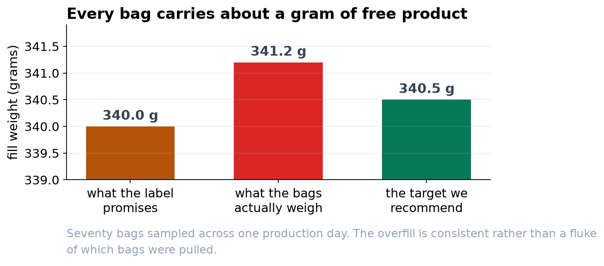
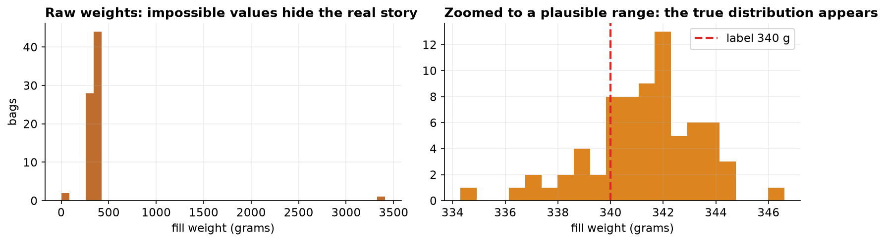

Fill-Weight Audit: The Line Is Running Slightly Heavy
A one-day quality-control sample says the 340 g bags are averaging a little over a gram heavy.
Recommendation
Lower the fill target from its current setting to about 340.5 grams. Our sample shows bags averaging a little over a gram above the 340 g label. At the volumes we run, that adds up, and trimming the target recovers most of it while keeping every bag safely above the printed weight. Do not aim straight at 340 g: that would put roughly half of bags under the label, which the net-content rules do not allow.
What we found
We weighed a sample of 70 bags pulled across one production day. The average fill was 341.2 grams against a 340 gram label, an overfill of about 1.2 grams per bag. This is not a fluke of which bags we happened to grab: the numbers are far too consistent for that. We are 95 percent confident the true average sits between 340.7 and 341.7 grams, a range that stays entirely above the label. In plain terms, we can say with confidence the line runs heavy, and by about a gram.


How much it matters
Per bag, a gram of coffee is nothing. Across a million-bag run it is roughly 1,229 kilograms of product given away, which for a commodity like coffee is a real cost. So the finding is worth acting on, but it is not an emergency: no customer is being shorted, and the fix is a small setpoint change, not a line rebuild.
Why the numbers can be trusted
The raw QC export was messy, and we cleaned it before drawing any conclusion. 2 duplicate log entries, 3 blank readings, and 3 impossible values (a 0-gram empty pan, a mistyped 34.1, and a fat-finger 3410) were removed, taking 78 rows down to 70 genuine measurements. We also confirmed the weights follow the normal bell shape a t-test expects, so the standard test applies, and a second test that makes no such assumption agreed with it. In short, the finding is not a data glitch or the result of using the wrong method.

Before you change the setpoint
Two cautions. First, this is one day on two lines; weigh a few more days before treating the overfill as a permanent number. Second, the whole finding rests on the scale, so verify it against a certified reference weight, a scale reading half a gram high would create an overfill that is not really there. With those two checks done, trimming the target toward 340.5 g is the safe, money-saving move.